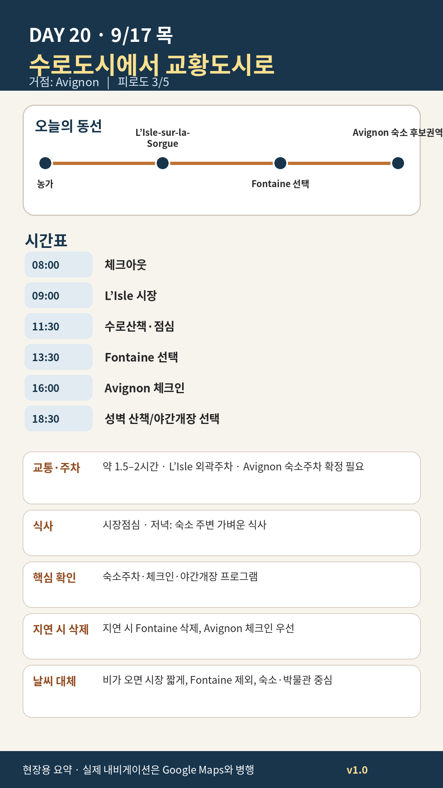

Day 20 · 9/17 목 · Avignon Phase 4 최종
거점 이동양쪽 챕터

카드의 지도영역은 일정 순서를 보여주는 개요이며 내비게이션이 아닙니다. 실제 도보·운전 경로는 Google Maps에서 다시 계산하세요.
시간표
Luberon
| 07:30–08:30 | 마지막 농가 아침·체크아웃 | 냉장고 비우기, 쓰레기·세탁·열쇠 반납 확인 |
| 08:40 | 농가 출발 | L’Isle 중심 보행구역과 시장통제 대비 |
| 09:15–11:20 | L’Isle 목요시장 | 연중 목·일 06:00–14:00. 목요일은 일요일보다 규모가 관리 가능 |
| 11:20–12:00 | 수로·물레방아 산책 | Quai Jean Jaurès·Rose Goudard 주변 |
| 12:00–13:00 | 점심 | 시장 구매식 또는 수로변 비스트로 |
| 13:00–14:15 | 선택: Fontaine-de-Vaucluse | 물과 절벽 풍경. 주차와 혼잡이 크면 생략 |
| 14:15–15:15 | Avignon 이동 | 숙소 주차·성벽 진입지침 확인 |
Avignon
| 07:30–08:30 | 농가 아침·체크아웃 | 냉장식품 정리, 차량 짐 완전 은폐 |
| 09:15–11:00 | L’Isle-sur-la-Sorgue 목요시장 | 채소·치즈·빵·작은 식재료 중심. 일요일 대시장보다 규모는 작아 이동일에 적합 |
| 11:00–12:00 | 운하·수차 산책 | 골동품점 장기쇼핑은 피하고 마을 풍경에 집중 |
| 12:00–13:00 | 가벼운 점심 | 시장 구매식 또는 샐러드·타르틴 |
| 13:00–13:45 | Avignon 이동 | 숙소 주차지침을 먼저 확인하고 성벽 안 무작정 진입 금지 |
| 14:00–15:00 | 체크인·주차·짐 정리 | 주차장 출입시간·차량 높이·재출차·21일 반납동선 확인 |
| 15:15–16:15 | 숙소 생활권 장보기 | 물, 빵, 과일, 햄·치즈, 아침재료. 다음 날 Halles를 보므로 소량 |
| 16:30–17:45 | Porte Saint-Michel→Corps Saints→Rue des Teinturiers 산책 | 첫날은 교황궁까지 가지 않고 남동부 생활권과 귀가로 파악 |
| 18:00–19:00 | 선택 A: Muséum Requien Nocturne | 공식 2026 일정: 18:00–21:00, 무료. 자연사 관심이 낮으면 45–60분만 |
| 18:00–19:00 | 선택 B: 성벽·Rhône 방향 산책 | 박물관보다 도시경험을 우선할 경우 이쪽이 기본 |
| 19:30–21:00 | 첫 저녁 | Fou de Fafa 또는 Les Cocottes Saint-Louis |
피로도
3/5
원고의 일자별 피로도 표기다.
오늘 확인할 것
- 핵심 실행
- L’Isle 시장→Avignon
- 권장 출발
- 08:00 체크아웃
- 완충
- 시장 후 출차·체크인 90분
- 최고 리스크
- 주차·짐·체크인
- 우선 삭제
- Fontaine·야간개장
- 대체안
- 시장 짧게 후 Avignon 직행
- 식사·휴식
- L’Isle 점심
- 잠금 필요
- 숙소·주차
이 날의 장소
일자별 시간표와 본문 표기에서 찾은 것이다. 하루의 전부가 아니라 장소 카드가 있는 것만 담는다.